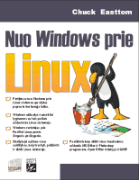
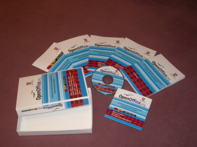
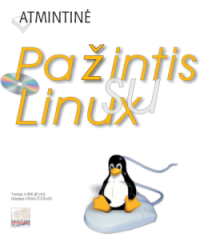
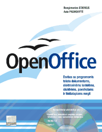
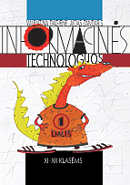
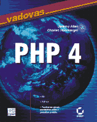
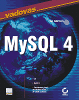
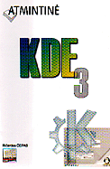
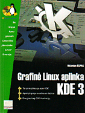
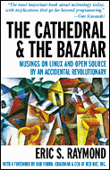

Knygos
Čia pateikiamos knygos apie atvirą kodą, kurias galite įsigyti Lietuvos knygynuose. Taip pat užsienio knygos,
laisvai platinamos internete.

Nuo Windows prie Linux
Autorius: Chuck Easttom
Šios knygos tikslas – paimti tai, ką jau žinote kaip prityrę Windows
vartotojai ir pritaikyti tas žinias Linux sistemai, taip padarant iš jūsų
nusimanantį Linux vartotoją. Dažnai bendros Linux sąvokos bus susietos su
analogiškomis Windows sąvokomis, taip padedant Windows vartotojams
išmokti dirbti Linux sistemoje.
Knyga skirta Windows® vartotojui, norinčiam pereiti prie Linux.

Atvirojo kodo standartinio biuro programinės įrangos rinkinys (su CD)
Autoriai: MII, IVPK
Atvirojo kodo standartinio biuro programinės įrangos rinkinys, pilnai
lokalizuotas Lietuvai 2003 metais (Mozilla 1.4, Calendar, OpenOffice 1.0.3),
vykdant IVPK projektą „Atvirojo kodo diegimas valstybės institucijose”.
Pateikiamas 5 knygų (PDF formatu) rinkinys...

Pažintis su Linux. Atmintinė (su CD)
Autoriai: Tomas Kirėjevas ir Mantas Kriaučiūnas
Linux - tai universali laisva OS, draugiška bet kuriam vartotojui.
Ją labai paprasta paleisti, įdiegti bei naudoti - tereikia įdėti prie knygelės pridedamą
kompaktinį diską su Lietuvai pritaikyta Linux OS ir nustatyti, kad kompiuteris būtų paleistas iš jo.
Po poros minučių jūsų kompiuteryje veiks Linux OS su intuityvia
grafine sąsaja, kurioje galėsite patogiai naudotis biuro, interneto
bei mokomosiomis programomis, žiūrėti filmus, klausytis muzikos bei žaisti žaidimus...

OpenOffice 1.0 (su CD)
Autoriai: Asta Pasmokytė, Bangimantas Starkus
„OpenOffice“ yra nemokamas verslo programų paketas, tinkamas įvairiems popieriniams ir
elektroniniams dokumentams rengti. Šio paketo programų naudojimui nereikia niekieno
leidimo, jis nemokamai pateikiamas kartu su knyga. Daugeliu atvejų „OpenOffice“ yra
suderinamas su „MS Office“ paketu parengtais dokumentais...
OpenOffice. Atmintinė
Autoriai: Asta Pasmokytė, Bangimantas Starkus
„OpenOffice“ yra nemokamas verslo programų paketas, tinkamas įvairiems popieriniams ir
elektroniniams dokumentams rengti. Šio paketo programų naudojimui nereikia niekieno
leidimo, jis nemokamai pateikiamas kartu su knyga. Daugeliu atvejų „OpenOffice“ yra
suderinamas su „MS Office“ paketu parengtais dokumentais...

Informacinės technologijos 11-12 klasėms, 1 dalis
Autoriai: Valentina Dagienė, Aidas Žandaris
Teksto rengimas aprašomas iliustruojant lokalizuota „OpenOffice.org“
(Write) bei angliškąja „Microsoft Office“ (Word) rašyklėmis.
Žiniatinklis ir elektroninis paštas aptariamas naudojantis
naršykle “Mozilla” bei jos paštu ir “Internet Explorer”...
 Linux sistemos administravimas
Linux sistemos administravimas
Autoriai: Vicki Stanfield, Roderick W. Smith
Knygoje rasite profesionalius atsakymus į daugelį su „Linux“ sistema susijusių klausimų. Leidinys išsiskiria iš tikro
suprantamais sudėtingų dalykų paaiškinimais ir ne tik jais. Kad būtu lengviau suprasti esmę, pateikiami
konkretūs pavyzdžiai, kuriuos galima tuoj pat išsibandyti. Be abejo jums patiks, kai savo
praktiniams uždaviniams spręsti knygoje rasite puikių idėjų ir sprendimo variantų.

PHP 4 vadovas (su CD)
Autoriai: Jeremy Allen, Charles Hornberger
Sugrįžkime dešimtmečiu atgal, kai žiniatinklis tebuvo ankstyvoje stadijoje.
Nors sukurtas dalytis informacija, tai buvo visiškai nekintantis pasaulis,
kuris priminė vienos krypties eismo juostą – vartotojai čia neturėjo tikros
galimybės sąveikauti su svetainėmis. Dinamiškos svetainės idėja buvo beveik
negirdėta....

MySQL 4 vadovas
Autorius: Ian Gilfillan
MySQL jau subrendo. Netekusi nerimto įrankio interneto svetainėms vardo,
MySQL dabar yra perspektyvus ir vertingas duomenų valdymo sprendimas.
Jei anksčiau tai buvo idealus pasirinkimas interneto svetainėms, šiuo metu
4 versija turi daugelį savybių, reikalingų ir kitose aplinkose ir išlaiko
savo įspūdingą spartą...

KDE 3. Atmintinė
Autorius: Ričardas Čepas
KDE yra „Linux“ operacinei sistemai skirta grafinė aplinka.
Atmintinėje surašyti pagrindiniai KDE elementai, jos pagalba, tarp įvairių langų ir nustatymo
dialogų bus lengviau orientuotis net naujokui. Joje taip pat pateikti dažniausiai naudojamos
klavišų kombinacijos ir atsakymai į keletą dažnai užduodamų klausimų...

Grafinė Linux aplinka KDE 3 (su CD)
Autorius: Ričardas Čepas
Unix tipo sistemos jau daug metų dominuoja tarnybinių stočių
(serverių) rinkoje dėl savo stabilumo, plėtimo galimybių bei atvirumo.
Tačiau šiuolaikinės grafinės darbastalio aplinkos trūkumas anksčiau trukdė
Unix sistemoms atsirasti eilinių vartotojų kompiuteriuose...

The Cathedral and the Bazaar
Autorius: Eric S. Raymond
„The Cathedral and the Bazaar“ turi perskaityti kiekvienas, kuriam rūpi kompiuterių pramonės ateitis
arba informacijos ekonomikos dinamika. Eriko Reimondo įtikinamas manifestas, apibrėžiantis atviro kodo
revoliuciją, padėjo išjudinti ir stumti į priekį šį programinės įrangos kūrimo bendradarbiaujant požiūrį.
Kompanijoms pritaikant technologijas, kaip „Linux“ , „Apache“, „Perl“, atviras kodas patvirtina, kad
taps konkurencingai pranašus Interneto amžiuje“, - rašoma apie knygą.